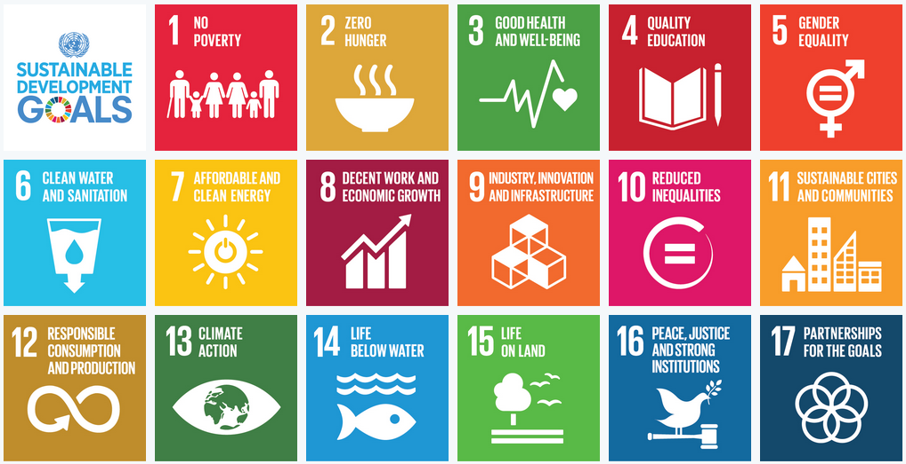

<div style="text-align: center; margin-left: 40px;"><big style="text-decoration: underline;"><big><big>United Nation Wiki by Schneckedde (Ferdinand Saurenbach)<br></big></big></big><div style="text-align: center;"><big><big style="text-decoration: underline;"><big><big>Auf dieser Seite werde ich über die Entwicklungsziele der Vereinten Nationen(UNO)&nbsp; berichten.</big></big></big></big><br><a href="https://th.bing.com/th/id/R.0727121149e09a2bdc86ea1c1f0e4ac7?rik=NQlfGWzo5AszBQ&amp;riu=http%3a%2f%2fwww.cybergrants.com%2fwebsite-assets%2fimg%2fblog%2f17-UN-Goals.png&amp;ehk=YG4nv80boDPBKiSr%2fgH1qgMC1K7fOXv0LjH1YuEHhkE%3d&amp;risl=&amp;pid=ImgRaw&amp;r=0"></a><br><br><br><div style="text-align: left;"><div style="text-align: center;"><a href="UN-WIKI-NoPoverty.html" target="_top"><big style="text-decoration: underline;"><big><big>Ziel 1: No Poverty</big></big></big></a><br><big><big><big><a href="UN-WIKI-Zero-Hunger.html" target="_blank">Ziel 2: Zero Hunger</a></big></big></big><br><a href="UN-WIKI-HEALTH-AND-WELLBEING.html"><big><big><big>Ziel 3: Good Health and Well-Being</big></big></big></a><br></div><br><br></div></div></div>